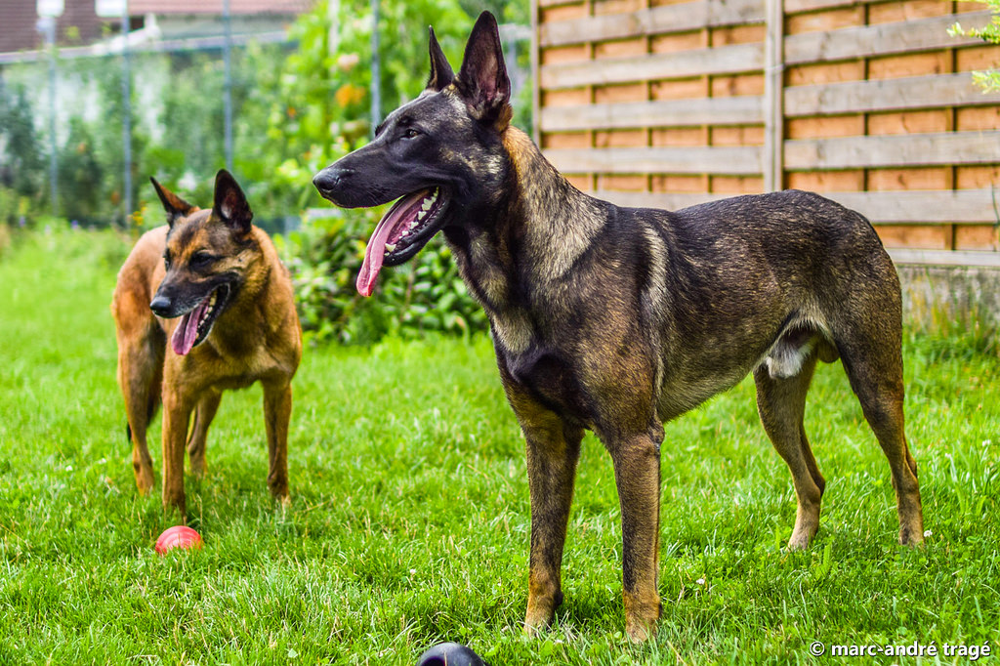

| דף ראשי | גזעים | מחלות | רקעים ותמונות | סקר | צרו קשר |
|---|
| קוקר ספאנייל |
| סמוייד |
| שפיץ יפני |
| פומרניאן |
| פודל |
| דני ענק |
| דלמטי |
| רועה גרמני |
| רועה קווקזי |
| רועה בלגי |
| בולדוג אמריקאי |
| בולדוג צרפתי |
| בולדוג אנגלי |
| צ'או צ'או |
| שיצ'ו |
| אמסטף |
| פינצ'ר |
| רוטווילר |
| דוברמן |
| האסקי סיבירי |
רועה בלגי
מידע נוסף
בתחילה היו כל הכלבים חיות פרא כמו זאבים ולא פעם תקפו את בני האדם במטרה לגנוב להם כבש או גדי, אבל כמה כלבים ניסו שיטה אחרת ובמקום לתקוף החלו להתקרב למושבות בני האדם וגילו שבעזרה לבני האדם בתפיסת הציד או שמירה על העדרים קיים גמול טעים מאוד בצורת עצם גדולה, וכך נוצר הקשר שמחזיק מעמד עד היום. הרועה הבלגי שבו תעסוק הכתבה הקרובה הוא אחד מכלבי העבודה הטובים ביותר והוא יעשה הכל בשביל הבעלים שלו.
רועה בלגי - מקור הגזע והיסטוריה
מוצאו של הכלב הוא איך לא מבלגיה. הוא הגיע לעולם במאה הקודמת וייעודו היה לעזור לחוואים ולרועי הצאן לשמור על העדרים העצומים מפני חיות רעות וגנבים. כלב הרועים גם היה מאגד את כל העדר ביחד ולא נותן לאף חיה תועה לעזוב. בנוסף על תפקידו כרועה צאן, הרועה הבלגי משגיח על החווה בלילה מפני גנבים , בקיצור כלב שפועל 24 שעות ביממה. הרועה הבלגי הוא כלב עם אופי מאוד פעלתני - הוא אוהב לרוץ, לשחק ולעבוד. הוא לא יכול להיות סגור במקום קטן כמו בית או מכלאה לאורך זמן. הרועה הבלגי נחשב לאחד מכלבי העבודה היותר טובים שקיימים בשוק. אפשר למצוא אותו בפעילות במשטרה, בצבא ובחברות פרטיות.
רועה בלגי - נתונים ומאפיינים
הרועה הבלגי מתחלק לתתי גזעים. לכולם אופי דומה כשרק המראה מבדיל ביניהם. תתי הגזעים הגיעו לאחר הרבעה של רועים בלגים בינם לבין עצמם. להלן תתי הגזעים וסימני ההיכר שלהם: גרוננדל: פרווה ארוכה וישרה בצבע שחור, כלב מאוד שמח ואוהב אנשים. מלילאור: בעל גוף בצבעים שחור חום בז' ויש לו מסכה שחורה על הפנים. לאקנואה : צבעים גוונים של חום ושחור פרווה מקורזלת . טרוון: צבעים בגווני אדום וחום ופרוווה ארוכה וחלקה ומסיכה שחורה. גובה ומשקל: רוב הרועים נעים בין 51-60 סמ 25-35 ק"ג.
מחלות נפוצות וטיפול - כלב רועה בלגי
לרועה הבלגי אין מחלות גנטיות ולרוב הוא בריא. אצל הווטרינר יש לבצע את החיסונים הרגילים ובדיקות כלליות. יש לבצע ריסוס נגד קרציות ופשפשים בגינה שהכלב שוהה בה. ועצה כללית את כלי האוכל והמים יש לנקות באופן קבוע עם סבון ומים.
